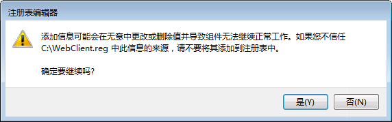

- 安装 WebClient 注册表
- 下载 WebClient.reg 注册表
- 直接点选【运行】
- 允许程序对此计算机进行更改，点【是】
- 是否确定要继续，点【是】
 - 已经成功加到注册表中，点【确定】
- 新增「受信任的站点」
- 开启IE，单击『工具』>『Ｉnternet 选项』>『安全』
- 单击『受信任的站点』，再单击『站点』
-
取消【勾选】『对该区域中的所有站点要求服务器验证(https:)』
输入平台站点，http://
点【添加】
- 重新开机电脑
- 开始使用 Web 资料夹
- 到课程办公室＞课程管理＞教材上传，于 Web 资料夹，点【开启】
- 当开启资源管理器后，则可以将所需档案复制、粘贴或拖拉方式上传